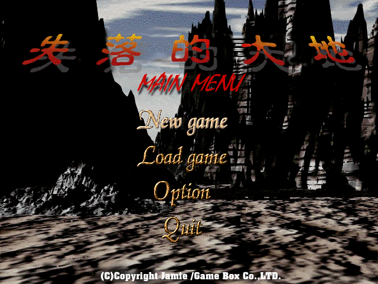
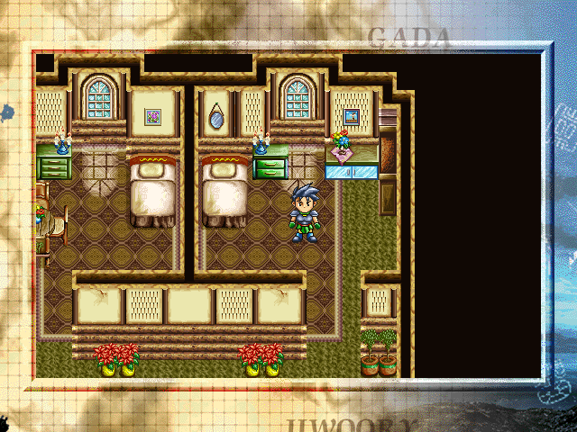
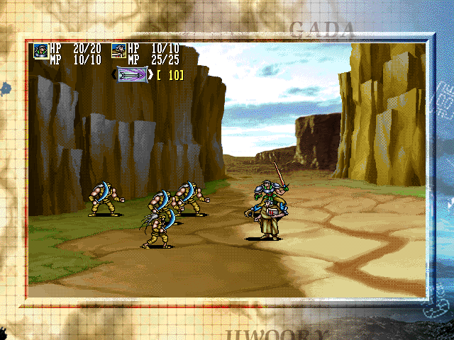

名稱：失落的大地：亞特蘭大之謎／復活邪神 (The Story of Atria Land，中文版)
簡介：韓國Jamie 1996年出品的角色扮演遊戲，1997年由歡樂盒中文化並代理發行，以3D斜
角畫面呈現，採團隊即時方式戰鬥 [待補]。



保護：光碟，破解碼（放入光碟才有音樂和動畫）：
ATRIA.EXE
F8 13 74 60
-- -- EB --
74 B0 E8 0F
EB -- -- --
備註：遊戲光碟的背景音樂會過大聲，且到Options將音量調小亦無用，以致會蓋掉語音部份。
若覺得音樂太吵，只能用破解方式略掉音樂。
操作：
Alt = 攻擊／決定隊員是否參戰
Ctrl = 跳躍／確定開戰
Shift = 魔法
Enter = 選單
說明：戰鬥過程無法加血，只能在平時加血。